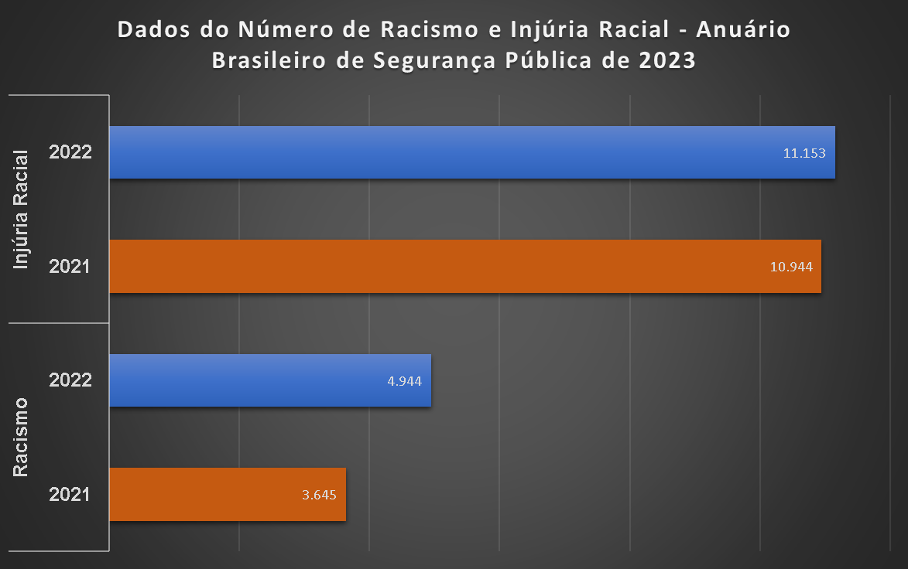

Soberania entre raças: Racismo e Injúria Racial:
O racismo é uma realidade que está interligada à história da sociedade há milênios, manifestando-se de formas diferentes de acordo com o período e o local. Devido a essa ligação direta e forte, observamos uma grande resistência de parte da população, não apenas no Brasil, mas no mundo, em aceitar pessoas negras como detentoras dos mesmos direitos que os brancos.
Após diversos anos de sofrimento, o governo vem tentando implementar políticas para diminuir a ocorrência desses casos. No entanto, devido ao investimento insuficiente e limitado, essas políticas acabam sendo tratadas como prioridade secundária, beneficiando apenas uma minoria que já possui um conhecimento prévio do assunto. Isso se torna ainda mais visível quando saímos e perguntamos às pessoas se elas conhecem o termo racismo e o que entendem por isso, sendo que, em sua grande parte desconhecem seu real significado e, mesmo que conheçam, não sabem quais são as medidas podem ser tomadas para resguardar seu direito e dignidade.
Dentro desse tema, existem diversas leis e dispositivos legais que visam a proteção da dignidade e os direitos de uma pessoa negra diante de um ato racista ou por injúria racial. No grafico abaixo podemos verificar que os números de casos não diminuíram, mas sim tiveram um aumento significativo:
Nesse trabalho nós visamos tentar compreender da melhor forma possível o que poderia ser feito para diminuir as ações e conscientizar de uma forma mais abrangente a população no geral. Diante disso podemos destarcar